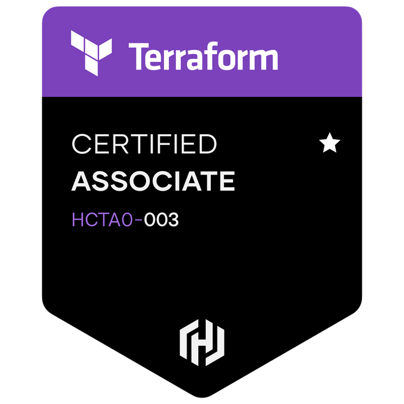
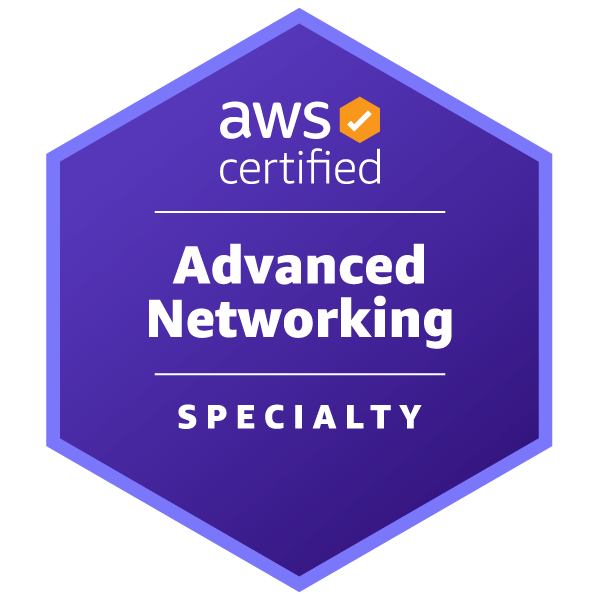
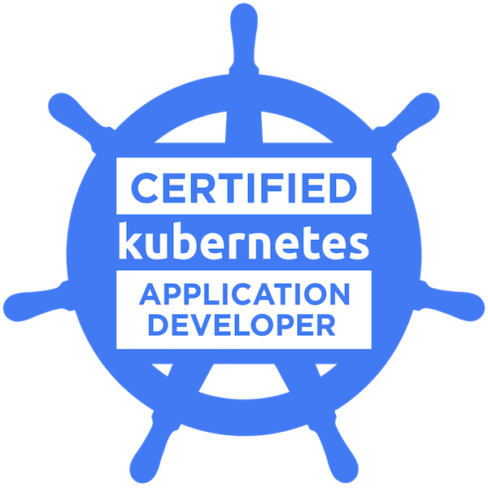

Shubham Sinha
DevOps Engineer - Cloud, IaC
shubham@devopsloop.in ∙ LinkedIn/shubham-om-sinha ∙ GitHub/devopsloop-ss ∙ View/Download as CV
Overview
DevOps Engineer with 7+ years of experience designing, automating, and scaling cloud-native infrastructure, CI/CD pipelines, and multi-cloud solutions for enterprise environments. Strong background in Infrastructure as Code (IaC) with Terraform, AWS and GCP cloud delivery, Kubernetes container orchestration, and developer enablement.
Specialized in converting manually managed environments into reusable, version-controlled IaC; building secure, repeatable deployment workflows; and implementing deployment patterns that improve release velocity, system reliability, and delivery pipelines. When not focused on critical delivery path tasks, I design and build custom automation utilities and developer tools—utilizing both traditional scripting and AI integration—to eliminate operational bottlenecks and elevate developer experience (DevEx) across teams.
Core Skills
Cloud and Infrastructure: AWS, GCP, VPC, IAM, EC2, ECS/EKS, load balancing, networking, security controls, multi-environment infrastructure, cloud migration support
Infrastructure as Code: Terraform, reusable modules, remote state, environment promotion, drift reduction, IaC migration, infrastructure review workflows
DevOps and CI/CD Automation: GitOps (ArgoCD), CI/CD, GitHub Actions, Jenkins, release automation, configuration management, deployment verification, operational documentation
Containers and Kubernetes: Kubernetes, Google Anthos, Helm, containerized application deployment, workload configuration, cluster operations, deployment troubleshooting
Automation and Operations: Bash, PowerShell, Ansible, Linux, incident support, runbooks, observability (Prometheus, Grafana, ELK Stack), compliance-aligned delivery, GitHub Copilot
Ways of Working: Agile delivery, cross-functional collaboration, architecture documentation, stakeholder communication, open source contribution, technical mentoring
Active Certifications



- AWS Certified AI Practitioner
- HashiCorp Certified: Terraform Associate (003)
- AWS Certified Advanced Networking - Specialty
Other / Past Certifications


- AWS Certified DevOps Engineer - Professional
- CNCF Certified Kubernetes Application Developer
- Red Hat Certified System Administrator
- Red Hat Certified Specialist in OpenShift Administration
- Red Hat Certified Specialist in Ansible Automation
- AWS Certified Developer - Associate
- AWS Certified Cloud Practitioner
Work Experience
EPAM Systems (Sep 2024 - Present)
Role: Senior System Engineer
- Engineered application migrations and container workloads within a complex multi-cloud environment (MCOM), leveraging Jenkins, GKE, AWS EKS, and Google Anthos to establish secure, scalable orchestration platforms.
- Established GitOps continuous delivery patterns for GKE and EKS workloads using ArgoCD and GitHub Actions, automating cluster state synchronization and drift remediation.
- Designed and implemented secure secrets management systems using HashiCorp Vault, achieving strict access controls and credential rotating configurations.
- Optimized delivery workflows and accelerated code delivery by building end-to-end CI/CD pipelines utilizing Helm, JFrog Artifactory, and Google Artifact Registry.
- Enhanced platform observability and reduced incident resolution times by configuring comprehensive monitoring, alerting, and logging dashboards using Prometheus, Grafana, and the ELK Stack.
- Leveraged agentic workflows with GitHub Copilot to automate repetitive tasks, scripting utilities that optimized daily operational efficiency.
- Collaborated with cross-functional stakeholders and developers to resolve blockers, ensuring minimal downtime and seamless transitions during cutover and handover exercises.
Skills: DevOps, Cloud Computing, Kubernetes, GKE, EKS, Anthos, GitOps, ArgoCD, Jenkins, Helm, JFrog Artifactory, Google Artifact Registry, HashiCorp Vault, Prometheus, Grafana, ELK Stack, GitHub Copilot, Multi-Cloud
SourceFuse (Nov 2020 - Sep 2024)
Roles: DevOps Engineer, Junior DevOps Engineer
- Led the transition of legacy client AWS environments into version-controlled Terraform IaC, designing reusable modules that standardized provisioning and eliminated configuration drift.
- Architected and deployed production-ready CI/CD pipelines using GitHub Actions and Jenkins, automating multi-environment promotions and validation checks.
- Standardized Kubernetes deployments by implementing GitOps delivery pipelines with ArgoCD and Helm charts, reducing manual deployment errors.
- Built monitoring dashboards and alerting configurations using Prometheus and Grafana to track application performance and infrastructure health.
- Contributed to and maintained the organization's open-source and internal reference architecture Terraform modules, reducing new environment provisioning times by 40%.
- Managed, deployed, and supported open-source and custom containerized applications on Kubernetes (EKS/GKE) and Helm, improving container scheduling efficiency.
- Partnered with client-side engineering teams, security officers, and architects to integrate platform services under strict design and compliance guidelines.
Skills: Terraform, AWS, GitOps, ArgoCD, GitHub Actions, Jenkins, Kubernetes, Helm, Prometheus, Grafana, Bash, PowerShell, Linux, IaC migration, DevOps automation, open source
Daffodil Software (Jan 2019 - Oct 2020)
Role: Junior Associate IT (DevOps)
- Collaborated on building scalable AWS and GCP cloud solutions, ensuring compliance, performance, and cost-efficiency.
- Standardized server configurations and accelerated developer onboarding by creating reusable Ansible playbooks and roles.
- Implemented and documented automated CI/CD pipelines to streamline application releases and testing workflows.
- Deployed, operated, and troubleshot development and staging Kubernetes clusters and containerized microservices.
- Authored architecture diagrams, runbooks, and recovery guides to ensure knowledge transfer and operational continuity.
Skills: Ansible, Kubernetes, AWS, GCP, Linux, configuration management, cloud operations, technical documentation
Selected Projects
Enterprise AWS Infrastructure Migration to Terraform
Supported an enterprise client in migrating manually created AWS infrastructure to Terraform. The work focused on reusable IaC design, environment consistency, reviewable change workflows, and automation around infrastructure deployments.
- Migrated manually managed resources into maintainable Terraform code and reusable modules.
- Improved infrastructure consistency across environments by standardizing naming, configuration, and deployment patterns.
- Reduced reliance on manual console changes by introducing Git-based review and GitHub Actions driven Terraform workflows.
- Helped create documentation and handover practices for long-term client ownership.
Internal Developer Platform and Reusable IaC Modules
Helped standardize infrastructure delivery across projects by building reusable Terraform components and supporting self-service patterns for engineering teams.
- Improved developer productivity by making common infrastructure patterns easier to consume.
- Reduced environment setup effort through reusable IaC components and repeatable automation.
- Supported platform governance by encouraging consistent infrastructure defaults and code review practices.
- Contributed to open source module development and internal enablement documentation.
Mission-Critical Backend API Platform for Enterprise 5G Infrastructure
Supported infrastructure and deployment automation for an enterprise 5G platform serving telecom infrastructure and compliance use cases.
- Supported cloud infrastructure, CI/CD, and deployment workflows for a mission-critical API service.
- Improved operational readiness through automation, documentation, and environment consistency.
- Supported audit and security-aligned delivery practices for telecom requirements.
- Helped engineering teams troubleshoot deployments and reduce operational friction during delivery.
Enterprise Multi-Wave Multi-Cloud Migration & Platform Orchestration
Orchestrated a multi-wave migration of application workloads and infrastructure for a complex multi-cloud environment, coordinating across multiple engineering teams and stakeholders.
- Migrated legacy container workloads and microservices to GKE and AWS EKS managed by Google Anthos.
- Designed secure secrets management architectures with HashiCorp Vault and rotating credentials.
- Standardized release mechanisms by building Helm charts, ArgoCD GitOps configurations, and Jenkins CI/CD pipelines.
- Aligned migration waves across developer, security, and ops teams to guarantee zero-downtime cutovers.
CV Keywords
DevOps Engineer, Cloud Engineer, Site Reliability Engineering, Infrastructure as Code, Terraform, AWS, Kubernetes, Helm, GitOps, ArgoCD, Prometheus, Grafana, CI/CD, GitHub Actions, Jenkins, Ansible, Bash, PowerShell, Linux, cloud migration, IaC migration, reusable Terraform modules, enterprise infrastructure, automation, release engineering, deployment automation, configuration management, cloud networking, IAM, security, compliance, operational documentation, runbooks, agile delivery.